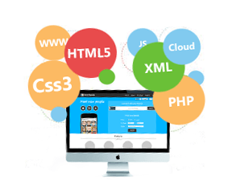

Web Development
Web development is a broad term for the work involved in developing a web site for the Internet (World Wide Web) or an intranet (a private network). Web development can range from developing the simplest static single page of plain text to the most complex web-based internet applications, electronic businesses, and social network services. A more comprehensive list of tasks to which web development commonly refers, may include web engineering, web design, web content development, client liaison, client-side/server-side scripting, web server and network security configuration, and e-commerce development. Among web professionals, "web development" usually refers to the main non-design aspects of building web sites: writing markup and coding. Most recently Web development has come to mean the creation of content management systems or CMS. These CMS can be made from scratch, proprietary or open source. In broad terms the CMS acts as middleware between the database and the user through the browser. A principle benefit of a CMS is that it allows non-technical people to make changes to their web site without having technical knowledge.
